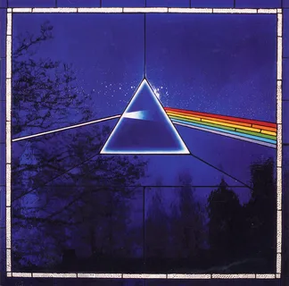
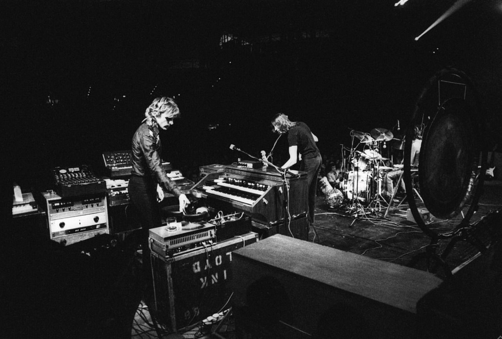
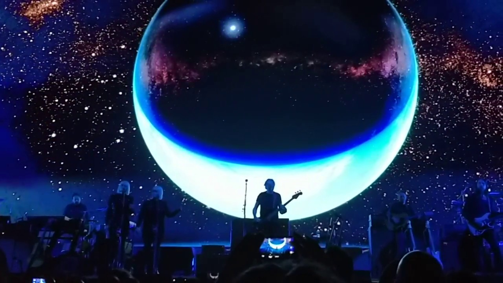
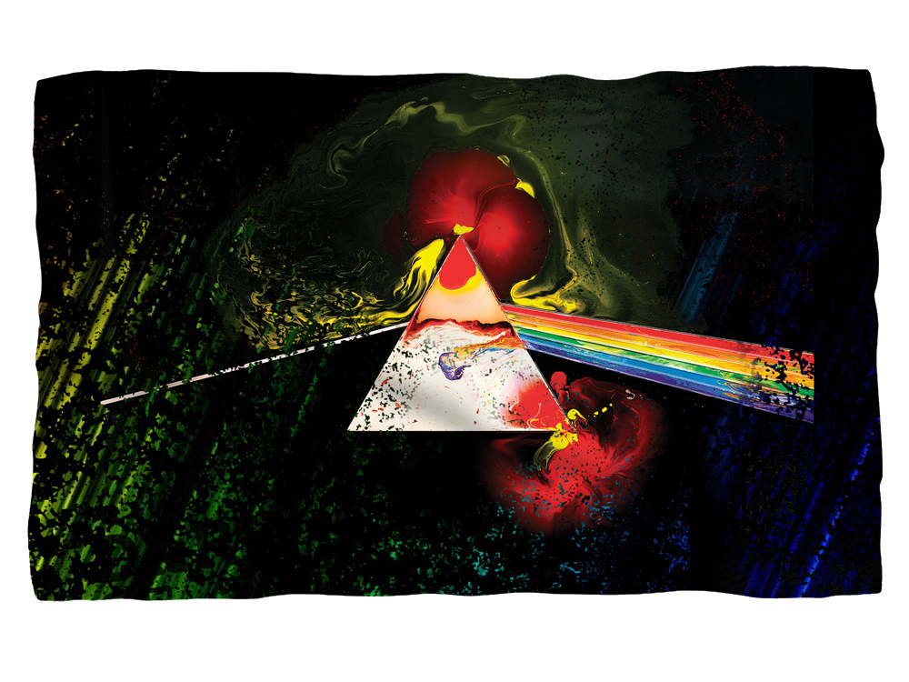
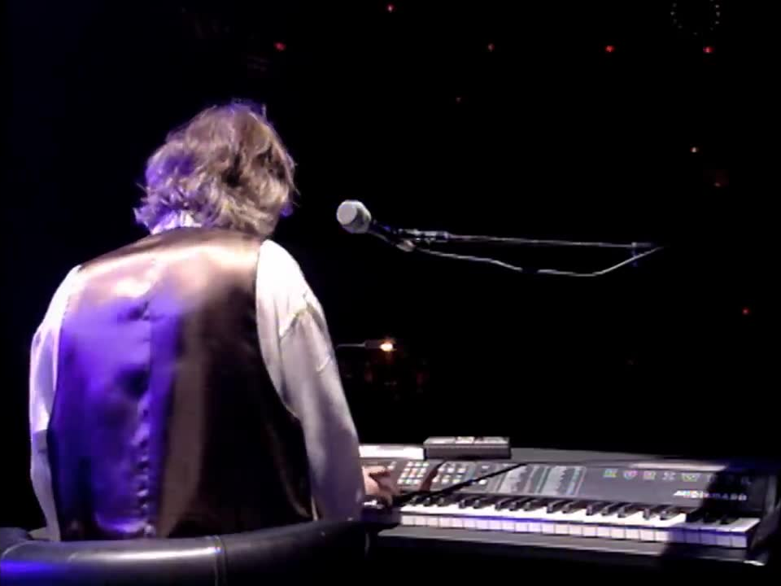
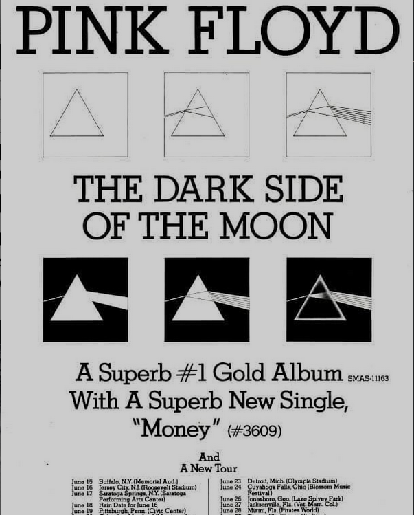
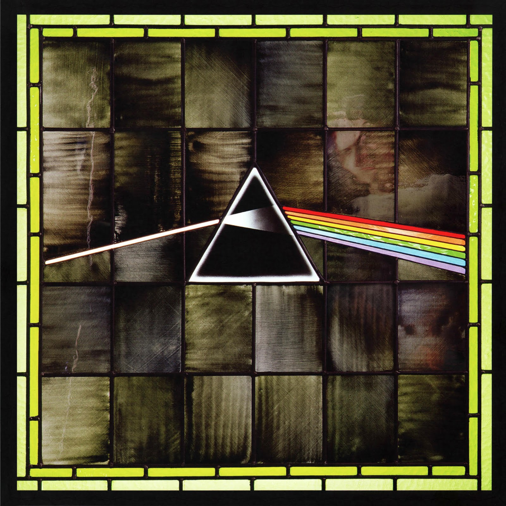
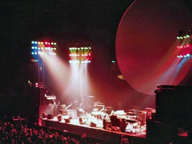
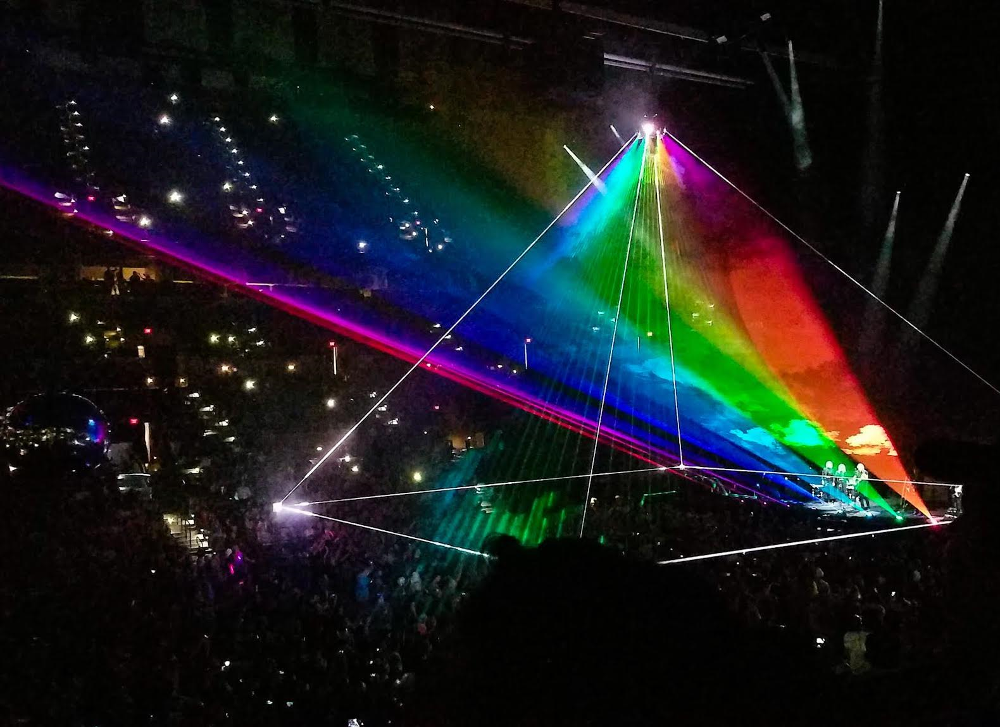

Pink Floyd - The Dark Side of The Moon
Один из самых лучших альбомов в истории музыки
#1 - US Billboard 200
#1 - Austrian Albums
15× Platinum (US)
14× Platinum (UK)
2× Diamond (Canada)
Рекорд пребывания в чартах Великобритании — 303 недели Мировой рекорд пребывания в альбомных чартах — 491 неделя Рекорд пребывания в альбомных чартах США — 724 недели Платиновый статус альбома в 17 странах (включая Австралию, Великобританию, Германию, США, Россию, Францию и т.д.). Дважды бриллиантовый статус в Канаде. Альбом занимает 2 место в рейтинге «100 лучших рок-альбомов всех времён» по версии журнала Classic Rock, по версии журнала Rolling Stone является лучшим альбомом прогрессивного рока всех времён, является вторым альбомом в мире по числу проданных копий альбома.
Участники записи
Pink Floyd Роджер Уотерс — вокал, бас-гитара, синтезаторы, звуковые эффекты Дэвид Гилмор — вокал, гитара, синтезаторы Ричард Райт — вокал, клавишные, синтезаторы, орган Ник Мэйсон — ударные, перкуссия, звуковые эффекты Также, в записи принимали участие: Дик Пэрри — саксофон Клэр Торри — вокал Дорис Трой — бэк-вокал Лесли Дункан — бэк-вокал Лиза Страйк — бэк-вокал Барри Сент Джон — бэк-вокал;
«Меня совершенно не волнует, слышали ли вы в своей жизни хотя бы одну нотку из всего сочиненного Pink Floyd, но я всем настоятельно рекомендую «The Dark Side of the Moon»… Во всех отношениях, это — великая музыка.» — Стив Пикок, Sounds
★ ★ ★ ★ ★ Rolling Stones ★ ★ ★ ★ ★ AllMusic ★ ★ ★ ★ ★ Sputnikmusic ★ ★ ★ ★ ★ BBC
«Speak to Me»
Автор музыки: Ник Мэйсон
«Breathe (In The Air)»
Авторы музыки: Дэвид Гилмор, Ричард Райт Автор текста: Роджер Уотерс Вокал: Дэвид Гилмор
Breathe, breathe in the air Don't be afraid to care Leave but don't leave me Look around and choose your own ground For long you live and high you fly And smiles you'll give and tears you'll cry And all you touch and all you see Is all your life will ever be. Run, Run rabbit run Dig that hole, forget the sun And when at last the work is done Don't sit down it's time to dig another one For long you live and high you fly But only if you ride the tide And balanced on the biggest wave You race towards an early grave.
«On The Run»
Авторы музыки: Дэвид Гилмор, Роджер Уотерс
«Time»
Авторы музыки: Дэвид Гилмор, Ричард Райт, Роджер Уотерс, Ник Мэйсон Автор текста: Роджер Уотерс Вокал: Дэвид Гилмор, Ричард Райт
Ticking away the moments that make up a dull day Fritter and waste the hours in an off-hand way Kicking around on a piece of ground in your home town Waiting for someone or something to show you the way Tired of lying in the sunshine staying home to watch the rain You are young and life is long and there is time to kill today And then one day you find ten years have got behind you No one told you when to run, you missed the starting gun And you run and you run to catch up with the sun but it's sinking Racing around to come up behind you again The sun is the same in a relative way, but you're older Shorter of breath and one day closer to death Every year is getting shorter, never seem to find the time Plans that either come to naught or half a page of scribbled lines Hanging on in quiet desperation is the English way The time is gone, the song is over, thought I'd something more to say
«Breathe (Reprise)»
Авторы музыки: Дэвид Гилмор, Ричард Райт Автор текста: Роджер Уотерс Вокал: Дэвид Гилмор
Home, home again I like to be here when I can When I come home cold and tired It's good to warm my bones beside the fire Far away, across the field The tolling of the iron bell Calls the faithful to their knees To hear the softly spoken magic spell
«The Great Gig In The Sky»
Авторы музыки: Ричард Райт, Клэр Торри Вокал: Клэр Торри
«Money»
Автор музыки и текста: Роджер Уотерс Вокал: Дэвид Гилмор
Money, get away Get a good job with more pay and you're O.K. Money, it's a gas Grab that cash with both hands and make a stash New car, caviar, four star daydream, Think I'll buy me a football team Money, get back I'm all right, Jack, keep your hands off of my stack. Money, it's a hit Don't give me that do goody good bullshit I'm in the high-fidelity first-class traveling set And I think I need a Learjet Money, it's a crime Share it fairly but don't take a slice of my pie Money, so they say Is the root of all evil today But if you ask for a rise it's no surprise that they're giving none away
«Us & Them»
Автоы музыки: Ричард Райт Автор текста: Роджер Уотерс Вокал: Дэвид Гилмор, Ричард Райт
Us and them And after all we're only ordinary men Me and you God only knows it's not what we would choose to do "Forward!" he cried From the rear And the front rank died And the general sat And the lines on the map Moved from side to side Black and blue And who knows which is which and who is who? Up and down And in the end it's only round and round and round "Haven't you heard It's a battle of words?" The poster bearer cried. "Listen, son," Said the man with the gun, "There's room for you inside." Down and out It can't be helped but there's a lot of it about With, without And who'll deny it's what the fighting's all about? Out of the way It's a busy day I've got things on my mind For want of the price Of tea and a slice The old man died
«Any Colour You Like»
Авторы музыки: Дэвид Гилмор, Ник Мэйсон, Ричард Райт
«Brain Damage»
Автор музыки и текста: Роджер Уотерс Вокал: Роджер Уотерс
The lunatic is on the grass The lunatic is on the grass Remembering games and daisy chains and laughs Got to keep the loonies on the path The lunatic is in the hall The lunatics are in my hall The paper holds their folded faces to the floor And every day the paper boy brings more And if the dam breaks open many years too soon And if there is no room upon the hill And if your head explodes with dark forebodings too I'll see you on the dark side of the moon The lunatic is in my head The lunatic is in my head You raise the blade, you make the change You re-arrange me 'til I'm sane You lock the door and throw away the key There's someone in my head but it's not me. And if the cloud bursts thunder in your ear You shout and no one seems to hear And if the band you're in starts playing different tunes I'll see you on the dark side of the moon
«Eclipse»
Автор музыки и текста: Роджер Уотерс Вокал: Роджер Уотерс
All that you touch And all that you see All that you taste All you feel And all that you love And all that you hate All you distrust All you save And all that you give And all that you deal And all that you buy, Beg, borrow or steal And all you create And all you destroy And all that you do And all that you say And all that you eat And everyone you meet And all that you slight And everyone you fight And all that is now And all that is gone And all that's to come And everything under the sun is in tune But the sun is eclipsed by the moon.
